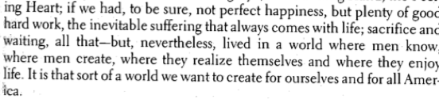

Writing
skip to...
Critical Theory
Du Bois believes that the inherently different outlook of a repressed people allows for an alternate worldview, “you realize this sooner than the average white American because, pushed aside as we have been in America, there has come to us not only a certain distaste for the tawdry and flamboyant but a vision of what the world could be if it were really a beautiful world...” (753). Being outside not only the ruling class, but really also the masses—the colored people of America still at the time lacked the basic rights of even the poorest white American. With so much lack comes the ability to appreciate simpler delights because it is one’s only option—a beautiful natural scene, the quality of light at sunset, et cetera. “A single phrase of music in the Southern South” is not an elaborate composition brought to life by many working in unison at expensive instruments mastered over a lifetime—beauty need not be expensive. When Du Bois writes of the infinite nature of Beauty, “in normal life all may have it and have it yet again,” he reminds us that no one owns the sunset, a fact that may seem obvious, but is actually fairly revelatory as it opposes the commodification of beauty.
Perhaps one of the most significant ways that capitalism has degraded human life is the notion that one must pay for beauty. Advertising making-up, blush for example, is essentially extolling the virtues of it. There is not inherent virtue is pink powder (in fact, make-up is quite harmful to the skin). The make-up companies invent flaw in pushing their product. As an American woman firmly footed in mass culture (unfortunately?), I am told what is natural for me is not ideal, and that I should strive to alter and conform. One of the most effective ways of doing this is that notion of conformity: Everyone else looks like this and it’s great, let me help you! Everyone does not have a natural blush. In fact, only a small number of the human population, the fairest of our species, maintain a rouge cheek at rest. For the majority of humans a flush only comes through physical excursion. Telling me that beautiful, healthy skin is one that lacks pigment to such a degree that, being nearly translucent, underlying blood is visible is pretty outrageous. Why does it seem normal to we, the masses? In a capitalist structure, in order to gain wealth, I must take some wealth away from another person—the buying and selling that is The Free Market. Humans have an inherent appreciation for Beauty, so the capitalist mind epiphanizes the ultimate sell. “The world is full of [beauty]; and yet today the mass of human beings are choked away from it, and their lives distorted and made ugly. This is not only wrong, it is silly,” (754). What you already have cannot be sold to you, so they tell us we don’t have it. The ruling class might have convinced its masses, but forcible kept outside by racial prejudice, he sees that black people have the opportunity to think for themselves and realize that beauty cannot be denied to any.
Du Bois then goes on to discuss the merits of the arts, “[...] we are going to have a real and valuable and eternal judgment only as we make ourselves free of mind, proud of body and just of soul to all men” (758). He believes the arts can advance or restrain a people. Essentially, the lack of art is the equivalent of a lack of voice. “What would people in a hundred years say of black American?” is the question that motivates his view of art as propaganda. He discusses how in order for black art to be legitimate, black people need to embrace it. That is all well and good, but I can’t help feeling that he has abandoned the most revolutionary aspect of his piece:
We black folk may help for we have within us as a race new stirrings; stirrings of the beginning of a new appreciation of joy, of a new desire to create, of a new will to be; as though in this morning of group life we had awakened from some sleep....” (754).
He has made the claim that black people have an advantage through their disadvantage in being able to see the trappings of materialistic white America. I think that is so right, but instead of upending the system, he seeks to work within it: white people have art, we should have art and there the problem is solved? Marx would see flaws in Du Bois ideas applied to the real life of the time. This is not true change. It’s a revolution within the existing system. Du Bois shares his notion of an ideal society, an ideal life:
Even though there are new ideas—exultation of beauty, a life compatible with enjoyment of the beautiful, group work so no one is overwhelmed—it cannot occur within the existing system. And we know, being at the advantaged end of history, that real change never did come.
While black art propaganda has been successful in advancing the position of some black people, this is winning the battle and losing the war. It is progress that the president of the United States is black. It is progress that the most admired pop icon, Beyoncé, is black. But it is progress within the capitalist system. This progress also resulted in people  of color being just as “choked” of beauty as the white mass. Working within and by the existing system resulted only, exactly as Marx predicted, in creating a new ruling class. Our culture is the same as that of 1920s America except now people of color are in the ruling class. People of color have gained the power to oppress others, and have lost the huge advantage they had to the white mass—that view outside the manipulation of the “camera obscura” to see the bounty of the free and natural. If anything, we can say that the current state is one, like mold in the damp dark, that has been nourished by the reinforcement by oppressed peoples of the most corrupting powers of capitalism. I wonder, then, as Du Bois did, “who shall let this world be beautiful? Who shall restore to men the glory of sunsets and the peace of quiet sleep?” (754).
Bibliography
W.E.B. Du Bois, "Criteria of Negro Art," Norton Anthology of African American Literature, ed. Gates and McKay (New York: Norton, 1997).
Karl Marx, "The German Ideology" in The Marx-Engels Reader, 2nded. (New York: Norton, 1978).
Literary Analysis
"Revenge: The Gentleman’s Pursuit"